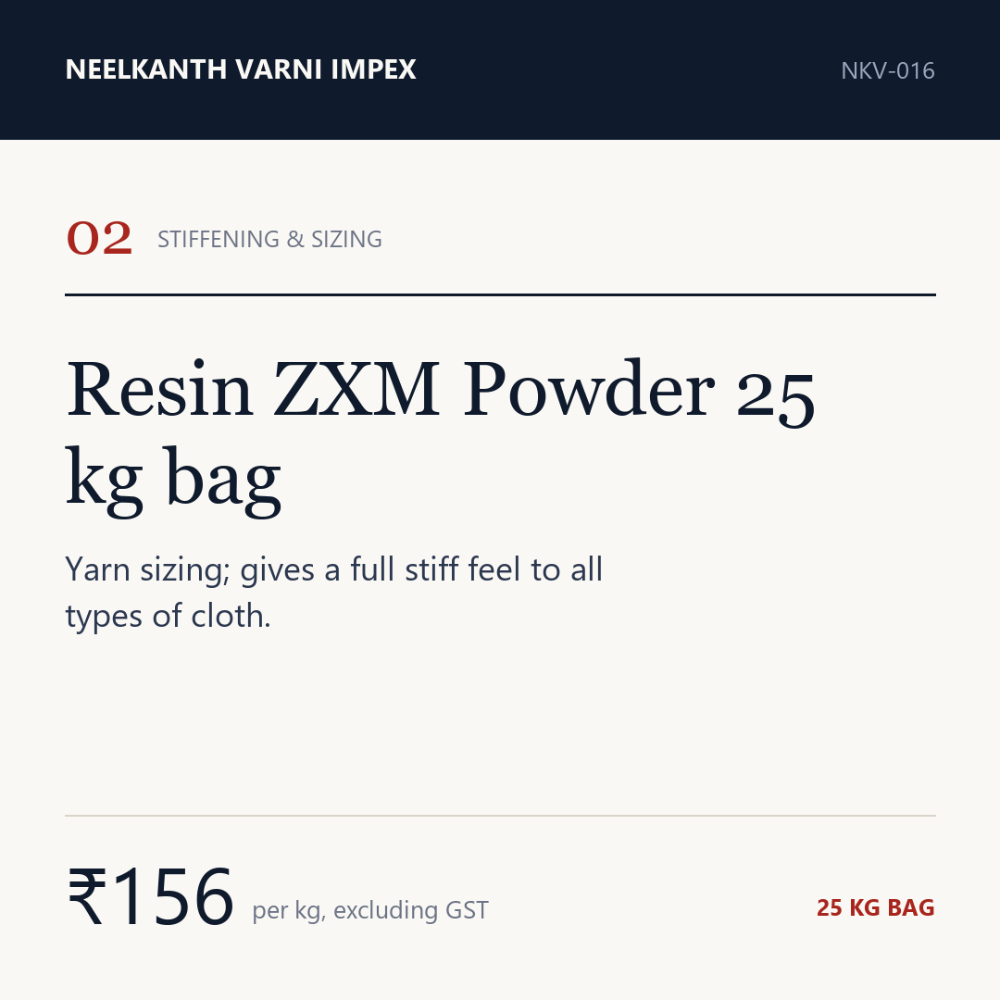

← All products
Stiffening & sizing · NKV-016
Resin ZXM Powder 25 kg bag

Rs. 156 per kg (excluding GST)
Yarn sizing; gives a full stiff feel to all types of cloth.
How to use: Mix 30 kg with 170 kg of hot water (90-100 deg C). The paste is ready to use.
Pack: 25 kg bag
Availability: In stock
Order on WhatsApp